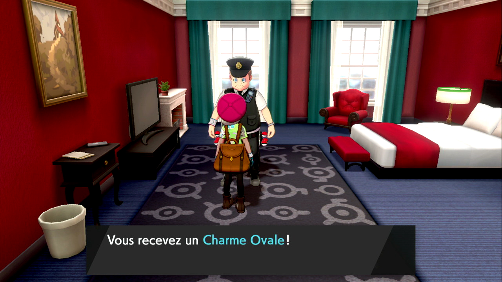
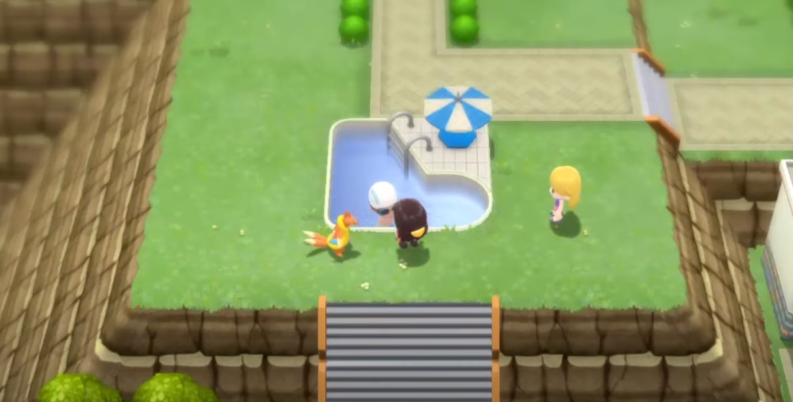

Ce charme, apparu dans pokemon Noir 2 et Blanc 2, augmente la chance d'obtenir un oeuf de
pokemon.
Dans Noir et blanc 2, X et Y et Rubis Omega et Saphire Alpha :
Vous pouvez l'avoir au près du professeur de la region après avoir complété le pokédex
Régional.
Dans Pokemon Soleil et Lune et Ultra-Soleil et Ultra-Lune:
Rendez-vous à Ho'ohale dans ce batîment:

Parlez à Shigeki Morimoto après l'avoir battu une première fois:

Dans Pokemon Epée et Bouclier:
Rendez-vous à Ludester dans ce batîment:

Parlez à Shigeki Morimoto après l'avoir battu une première fois:
Dans Pokémon Diamant Étincelant et Perle Scintillante:
Rendez-vous à la Rive du Lac Courage et combatez Shigeki Morimoto après avoir battu la ligue et obtenu le pokédex Nationnale:
